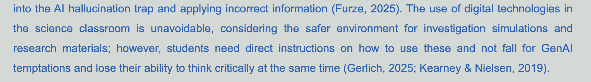
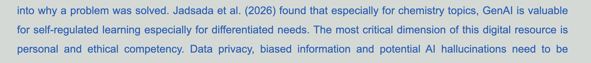
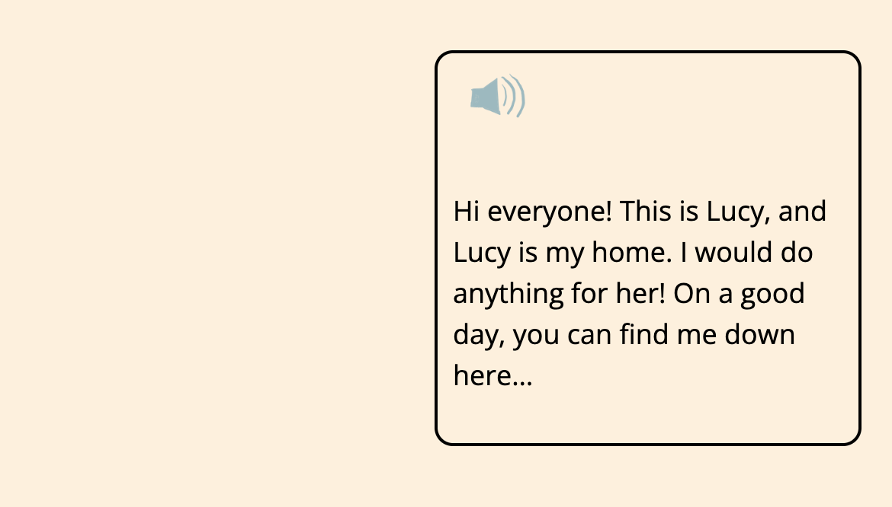
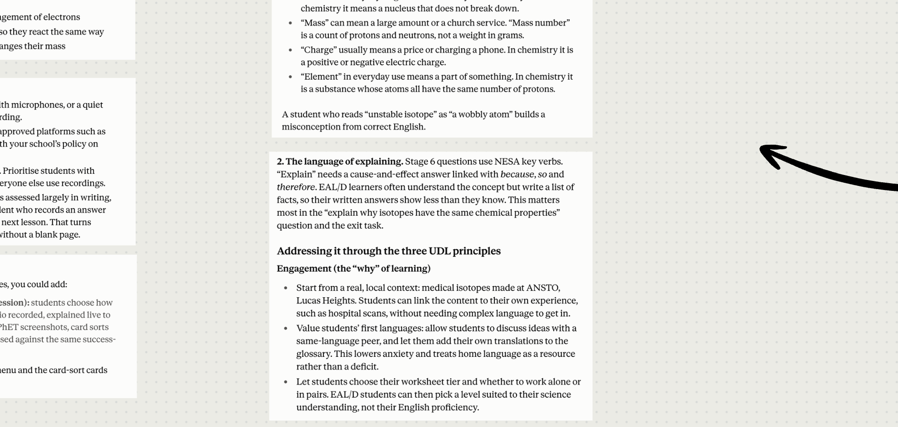
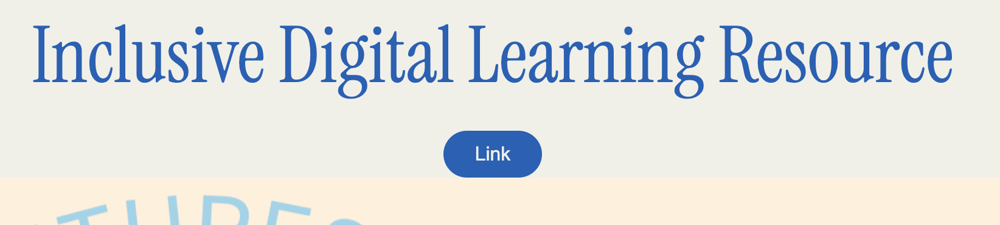
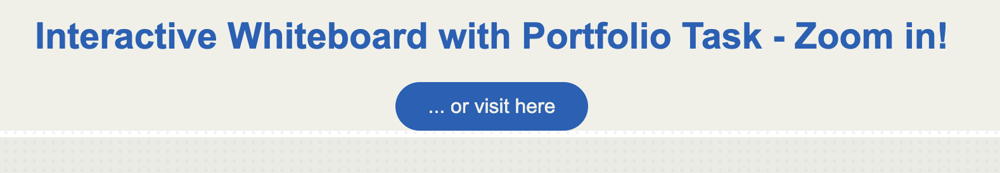

| Feedback | Improvement |
|---|---|
| Consider supporting your artefacts with evidence-based research on technology integration specific to your subject area. |
1. Week 6, Decision NoteThe use of digital technologies in the science classroom is unavoidable, considering the safer environment for investigation simulations and research materials; however, students need direct instructions on how to use these and not fall for GenAI temptations and lose their ability to think critically at the same time (Gerlich, 2025; Kearney & Nielsen, 2019).  Kearney, M., & Nielsen, W. (2019). Teaching and learning science with digital technologies. In V. Dawson & J. Donovan (Eds.), The art of teaching science: A comprehensive guide to the teaching of secondary school science (pp. 209-225). Taylor & Francis Group. 2. Week 9, Recommendation 3Jadsada et al. (2026) found that especially for chemistry topics, GenAI is valuable for self-regulated learning especially for differentiated needs.  Jadsada, R., Suttipong, B, Methin, I. & Peerapong, C. (2026). Instructor and AI roles in the chemistry classroom: Future science teachers’ perceptions in a ChatGPT-enhanced formative assessment. Chemistry Teacher International: Best Practices in Chemistry Education, 8(3), 559–575. https://doi.org/10.1515/cti-2025-0097 |
| From an accessibility perspective, attempt you provide transcripts for audio. |
1. Week 10, Inclusive Digital Learning ResourceAll audio is written into the story text at the same time.  |
| Your Week 4 AI task output was only accessible through the Prezi, and went blurry when pulled to full screen. Ensure that artefacts can be easily viewed for closer inspection. |
I checked all embedded iframes (Weeks 10, 11 and 12) in full screen for readability. Iframes are designed to be viewed in full screen, which should resolve the issue. The interactive whiteboard in Week 11 has all elements, such as tables and screenshots, embedded in Canva to solve the blurry issue from Week 4, even when zoomed in.  I further added links to all original sources to provide another way to access the content.   |
| What specific research can you engage in that helps you build your knowledge of technology integration in your own subject area, which you can then link to future practice? |
Jadsada, R., Suttipong, B, Methin, I. & Peerapong, C. (2026). Instructor and AI roles in the chemistry classroom: Future science teachers’ perceptions in a ChatGPT-enhanced formative assessment. Chemistry Teacher International: Best Practices in Chemistry Education, 8(3), 559–575. https://doi.org/10.1515/cti-2025-0097 This journal article provides a great case study of how different achievement levels view the effectiveness of AI-generated formative assessment in chemistry. Students' views of AI-generated formative assessment vary by achievement level, which I will keep in mind for my future teaching. |
| Consider consistent paragraphing to improve the structure of your reflections. |
Paragraphs are used in all responses to readings. |
| Only works cited need to be listed in your reference list, with a separate list needed for readings and ePortfolio. |
I have separated the references list for this assessment. The references for the portfolio and AI tasks now appear only in the portfolio. |